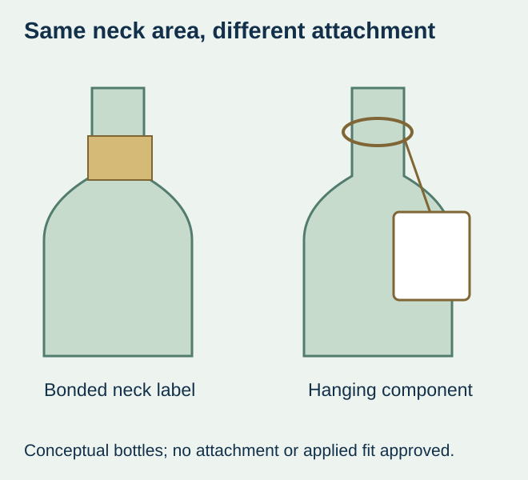
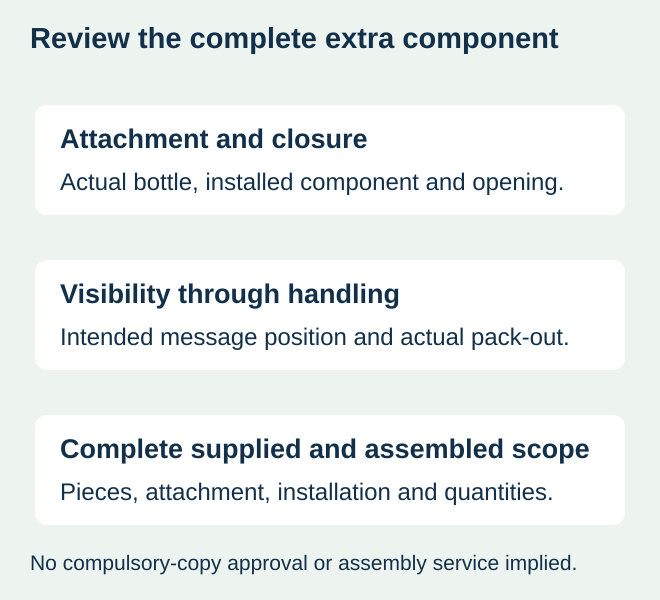

A wine brand adds a short gift message near the bottle neck. One mockup shows a tag hanging around the neck; another shows a narrow self-adhesive label below the capsule. They occupy a similar part of the picture, but the physical attachment and packing task differ.
Choose the attachment architecture before fixing the artwork and requesting a price. A hanging tag must be retained in its actual neck-and-closure arrangement. A self-adhesive neck label needs a suitable landing surface and applied fit. Neither should be accepted simply because a flat design looks appropriate beside the bottle.


Give the extra component a clear job
Identify whether it carries an optional gift note, edition cue, promotion or another authorised message. Decide whether it needs a stable front-facing position and how long it must stay with the bottle. Keep required product information on its separately approved route; this guide does not determine whether a tag can carry a particular mandatory declaration.
Avery Zweckform’s hang-tag overview describes product tags, hanging attachments and bottle/beverage uses within its own range. That is an external format example, not a ZFU product offer or evidence that a particular tag fits this wine bottle. Obtain actual material and attachment details from any proposed tag provider.
Compare the physical duties side by side
| Decision | Hanging tag | Adhesive neck label |
|---|---|---|
| Attachment | Actual hanger, opening, loop or supplied retention arrangement | Actual adhesive contact on the defined neck surface |
| Closure relationship | Does the intended installation and opening remain practical? | Does the applied footprint preserve closure clearance? |
| Viewing position | Can the tag move, turn or sit differently in the actual pack? | How is its position aligned on the bottle? |
| Handling | Does the component remain as required through the real route? | Does the complete label remain acceptable on its surface? |
| Packing work | Who installs the confirmed tag/attachment and when? | Who applies the label and with which supported method? |
| Quoted deliverable | Tag, attachment, preparation and assembly as actually offered | Printed label, supplied format and application scope as offered |


Use the actual closure and assembled pack
For a hanging proposal, inspect installation and retention using the intended bottle, closure and supplied tag arrangement. A hole diameter or string length from another product is not a universal fit specification. Check the actual presentation in any gift insert, case or other packing component. Do not infer handling success from a single bottle that was carefully posed for a photograph.
For the self-adhesive proposal, measure the usable neck area and preserve clearance around the capsule and opening features. A taper can change the appropriate cut shape. The neck-label guide owns that fit question; a hanging alternative should not be used to claim that an unqualified adhesive shape is acceptable.
If an extra component makes access to the closure awkward, choose another supported position or omit the component when it has no necessary role. Do not alter the primary closure or describe the tag as an opening-evidence feature unless the responsible package team has specified and evaluated that separate function.
Choose according to the actual message and packing constraints
A hanging proposal is worth comparing when the buyer wants a removable extra message and can support the actual attachment, retained presentation and assembly work. If stable positioning on a defined surface is important and the bottle provides an acceptable adhesive panel, request a supported neck-label proposal.
If neither route can carry the message practically, shorten optional content, use an existing approved panel or compare another confirmed format. The extended-content guide addresses a different attached construction. A small bottle may also need the panel-allocation review before another component is added.
Include assembly and leftovers in the quantity decision
A tag quotation may describe printed pieces alone or include an attachment. A printed-label quotation may describe loose supply rather than application to bottles. Identify what is actually offered and who completes the remaining work before comparing order totals. No format is automatically cheaper or faster.
For a hypothetical club-release gift set, a shared message tag may be intended for only part of the bottle run. Plan that component against the actual subset and available assembly step rather than order one for every front label by default. Conversely, do not count a complete gift pack if its required extra component is missing. Use confirmed quantities and allowances; no stock-saving percentage is assumed.
Retain the attachment reference with the order
Keep an identified complete-pack reference, actual bottle/closure, component drawing and supply/assembly boundary. A later closure or insert change can affect a hanging part even if the printed message stays the same. A later adhesive or footprint change can reopen the bonded-label review.
The purchase should identify the supported way the message stays with the bottle and the real work it adds. This site’s wine-label inquiry can discuss an adhesive label requirement; hang-tag manufacture, attachment supply, sourcing and assembly are not standing offers and would require separate project confirmation.
Discuss the unresolved label requirement
Send the actual bottle and closure, the job of the extra component, desired visibility, approved content, package/insert arrangement and quantities. Ask whether an adhesive neck-label proposal is supported; any tag sourcing or assembly would need separate confirmation. Review the wine-label product scope and prepare a label specification inquiry. The contact page opens an email draft and lists email or WhatsApp for attachments. Supply, proof options, testing, pricing and timing require project confirmation.